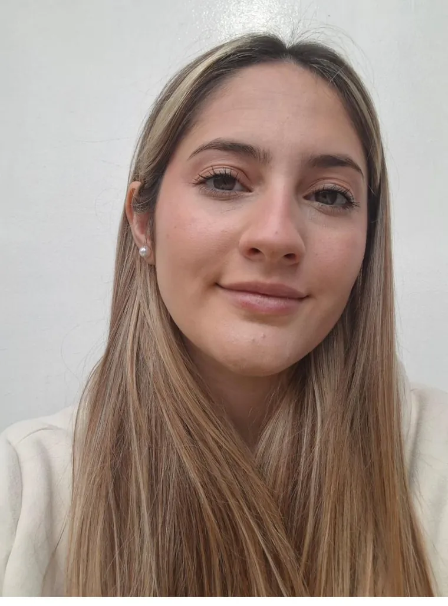

1 / 1
Diseñadora Gráfica | Branding e Identidad Visual
Diseño marcas completas: logotipo, paleta, tipografía y las piezas donde todo eso se aplica. Antes de proponer me meto en el rubro del cliente, para que la marca le hable de verdad a su público.
Mendoza, Argentina · Remoto, horario flexible
Deslizá01 — Sobre mí
Soy diseñadora gráfica y trabajo sobre todo en branding e identidad visual: logotipos, paletas de color, sistemas tipográficos y piezas para entornos digitales y redes.
Antes de proponer nada me gusta conocer a fondo al cliente y su rubro, para que cada marca conecte de verdad con su público y no se parezca a todas las demás.
Vengo del diseño UX/UI, que me dio criterio de jerarquía visual, consistencia de marca y costumbre de trabajar con feedback. Hoy es el complemento de lo que hago, no el centro.
Estudio la Licenciatura en Diseño Gráfico y Digital en la Universidad Champagnat de Mendoza y en diciembre de 2026 termino la Técnicatura. Soy proactiva, me muevo bien con las correcciones y siempre llego con ideas nuevas.

Branding e identidad visual02 — Proyectos
Branding para Veka Studio, una pasantía en Mikastudio, trabajos freelance y de la Universidad Champagnat. Tocá el que quieras para ver el proyecto completo.
03 — Experiencia UX/UI
Antes del branding trabajé cuatro años diseñando producto digital. De ahí me quedó el criterio de jerarquía, la consistencia de marca y la costumbre de trabajar con feedback.
04 — Trayectoria
Diseñadora gráfica enfocada en branding e identidad visual. Diseño logotipos, paletas de color, sistemas tipográficos y piezas gráficas para entornos digitales y redes sociales. Antes de proponer, me gusta conocer a fondo al cliente y su rubro, para que cada marca conecte de verdad con su público. Vengo del diseño UX/UI, lo que me dio criterio de jerarquía visual, consistencia de marca y trabajo con feedback.
05 — Contacto
Contame qué tenés en mente y vemos cómo resolverlo. Trabajo de forma remota, en horario de España.
lucianagarridoux.ui@gmail.com